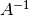
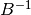
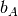
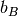
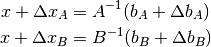
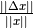
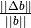

More exercises¶
Exercise: Power spectrum & data fitting
- Download the FITS file data_oof.fits, read and run the following example of power spectrum estimate:
"""
non-linear fit example with 3 parameters model 1/f noise :
variance*[ 1 + (f_knee/f)^alpha ]
Jm. Colley
"""
from __future__ import division, print_function
import numpy as np
import scipy.optimize as spo
from matplotlib import pyplot as mp
from astropy.io import fits
FREQ_SAMPLING = 180
def spectrum_estimate(signal):
"""
Return power spectrum mode 0 to Nyquist
"""
size_signal = signal.size
fft_signal = np.fft.fft(signal)
ps = abs(fft_signal)**2 / size_signal
return ps[:1 + size_signal // 2]
# inspect the FITS Table
fits.info('data_oof.fits')
hdulist = fits.open('data_oof.fits')
print(hdulist[1].header)
# read the FITS table as a record array
table = hdulist[1].data
signal = table.timeline
nsamples = signal.size
# create array freq mode 1 to Nyquist Mode
delta_freq = FREQ_SAMPLING / nsamples
freq = delta_freq * np.arange(1, nsamples // 2 + 1)
# remove mode 0
spectrum = spectrum_estimate(signal)[1:]
- Complete the ellipses in the following code, to estimate the 1/f noise parameters of the signal.
def oof_model(freq, param):
"""
1/f noise model
param[0] : noise standard deviation
param[1] : knee frequency
param[2] : alpha
freq : array of frequency
"""
sigma, fknee, alpha = param
return ...
def compute_residuals(param, observation, freq):
"""
Return array: observation - model
"""
model = ...
residual = np.log(observation / model)
print("residual: ", np.sum(residual**2))
return residual
# fit with scipy optimize, leastsq() function
param_true = np.array([np.std(signal), 1, 1.2])
param_guess = param_true * np.random.uniform(0.5, 2, 3)
ret_lsq = spo.leastsq(..., param_guess, args=(...),
full_output=True)
param_est, cov_x, infodict, mesg_result, ret_value = ret_lsq
print("Return value:", ret_value)
print("Return message:", mesg_result)
if ret_value not in (1, 2, 3, 4):
raise RuntimeError(mesg_result)
print("guess :", param_guess)
print("solution :", param_est)
# plot
mp.figure()
mesg_title = ('Fit of power spectrum: '
r'${\rm PSD}(f)=\sigma^2'
r'\left(1+(\frac{f_{\rm knee}}{f})^\alpha\right)$'
'\n')
mp.title(mesg_title)
mp.xlabel('Hertz')
mp.loglog(freq, spectrum)
mp.loglog(freq, oof_model(freq, param_guess), '.-')
mp.loglog(freq, oof_model(freq, param_est))
mp.ylim(ymax=1.e-4)
mp.grid()
sigma_param_est = np.sqrt(np.diagonal(cov_x))
mesg_fit = (
r' $\sigma={:5.3g}\pm{:3.2g}$'.format(
param_est[0], sigma_param_est[0]) + '\n'
r'fit: $f_{{\rm knee}}={:5.3f}\pm{:3.2f}$'.format(
param_est[1], sigma_param_est[1]) + '\n'
r' $\alpha={:5.3f}\pm{:3.2f}$'.format(
param_est[2], sigma_param_est[2]))
mp.legend(['raw spectrum', 'guess', mesg_fit], loc='best')
mp.show()
[Solution]
Exercise: Condition number & error propagation.
Given

Check that
 is orthogonal.
is orthogonal.Compute the condition numbers of
and  .
.Compute  and .
By Monte-Carlo sampling, check how perturbations in  and  are propagated to the solutions

by computing the mean relative errors  and . Compare these values to the condition numbers of the matrices.
[Solution]
Exercise: Scientific constants & integration
Numerically verify the Stephan-Boltzmann law, which relates the emission of a black body to its temperature.